2024 Summer REU experience
This is a simple blog post talking about my REU experience at UW Eau Claire in summer 2024.
First, I want to explain what REU is. Research Experience for Undergraduates (REU) is a program that provides research opportunities for undergraduates in various fields of science and engineering. Essentially, it’s a summer research program for college students funded by the National Science Foundation (NSF).
It’s actually a pretty competitive program, and I was lucky to be selected just before giving up hope, and had to change plans last minute regarding my Taiwan trip.
It was quite an excruciating journey there, as I went from Taiwan to Chicago, took a bus to Madison first, and then another bus to Eau Claire.
My first impression of Eau Claire was that it is really beautiful, with lots of greenery and lakes, something only a rural area can offer.
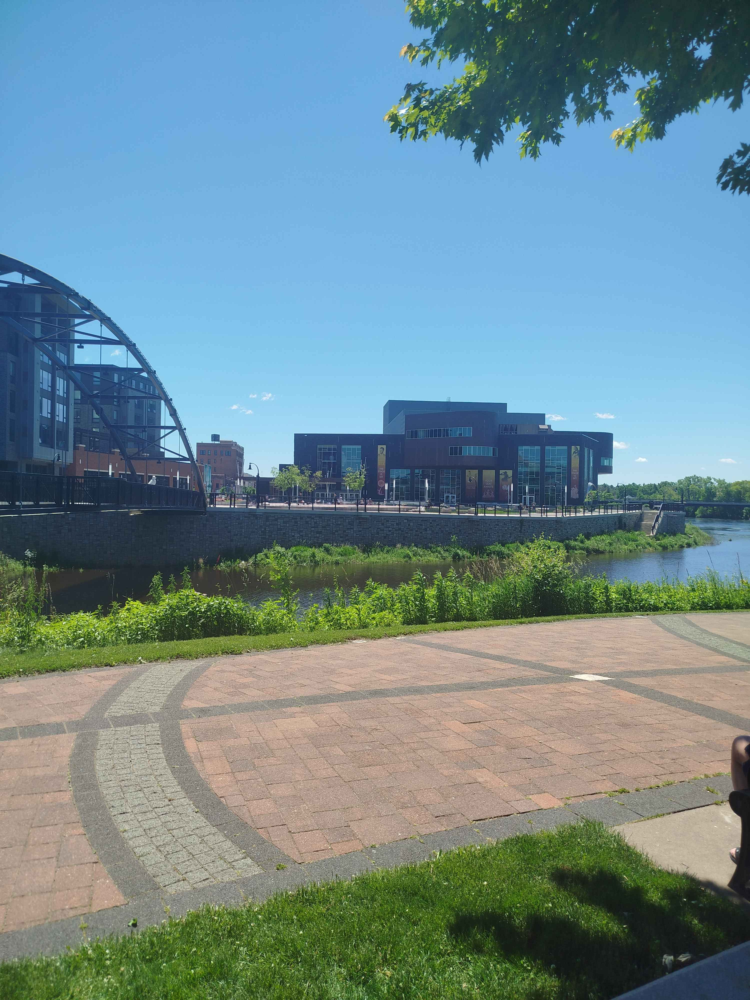 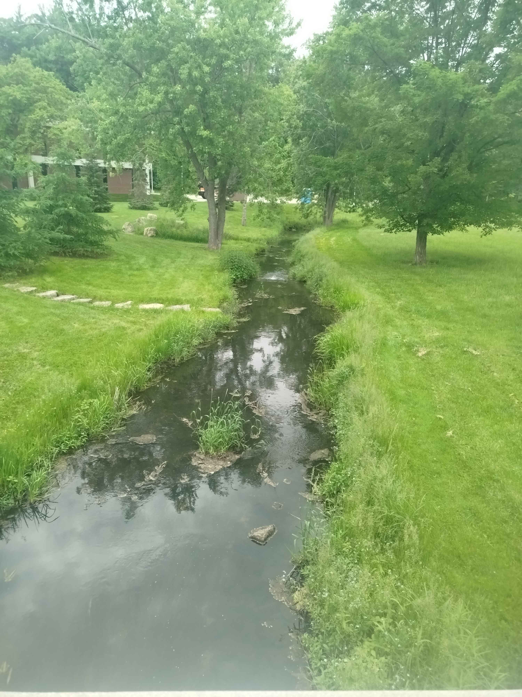Then, I met other students in the program, most were pretty chill, while some I only was able to talk to for a few times. There was 10 students in the program, ranging from CS, Biology, Physics, and Chemistry. It’s really interesting how everyone has different backgrounds and how they ended up in this program. One skipped half of high school and one was already 36 years old!
This was the room that I stayed in for the summer. Looks small, but it was actually pretty spacious for me.
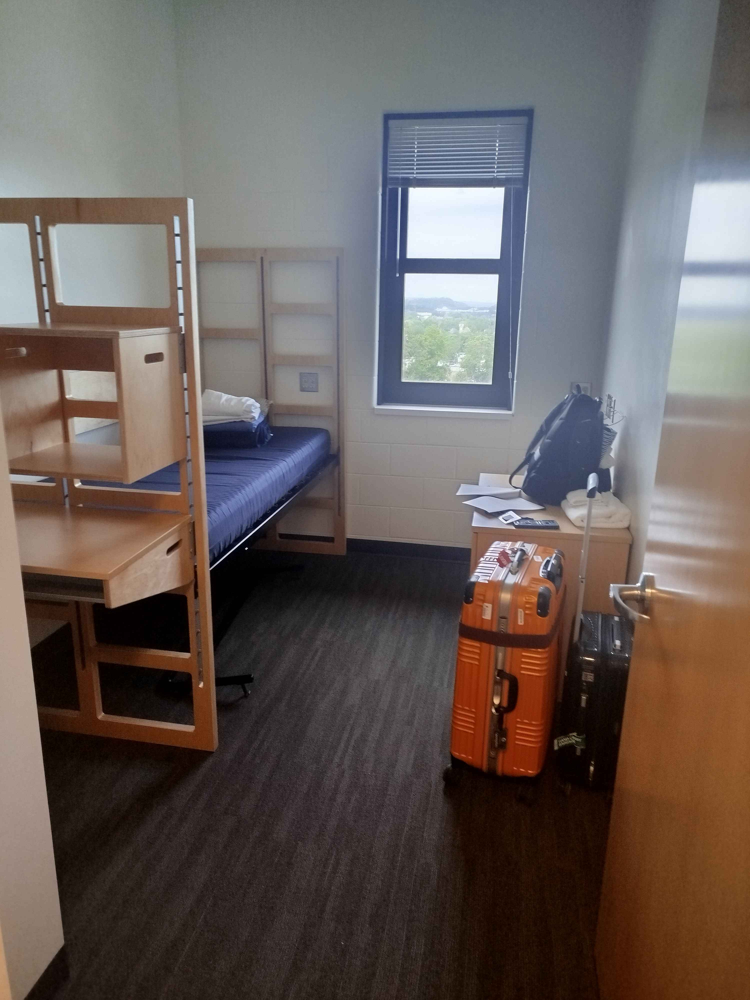Now let’s talk about the project I worked on. I worked on a extremely new topic called “Open Set Domain Adpatiation for Semantic Segmentation”. Originally, Dr. Gomes wanted to work on using generative models for UDA, but I thought it was too simple and wanted to do something more challenging. Coincidentally, A CVPR paper just came out about tackling UDA for semantic segmentation in a open set manner, and I thought it was a good opportunity to try it out. I was the only person in this project, and unfortunately my mentor was also quite busy dealing with other projects, so I was on my own for most of the time.
Honestly, I wasn’t really able to do much, as the code was only released a month after the program started, and my ideas were all unsuccessful. I did have a much better understanding of the topic (OOD especially), and I learned a lot of new things, so it wasn’t a waste. I will continue to work on this project in the future, and see if I can make it work. We did present our results at the end in a symposium, but it was pretty small, so it was not that exciting. I did meet some cool people though!
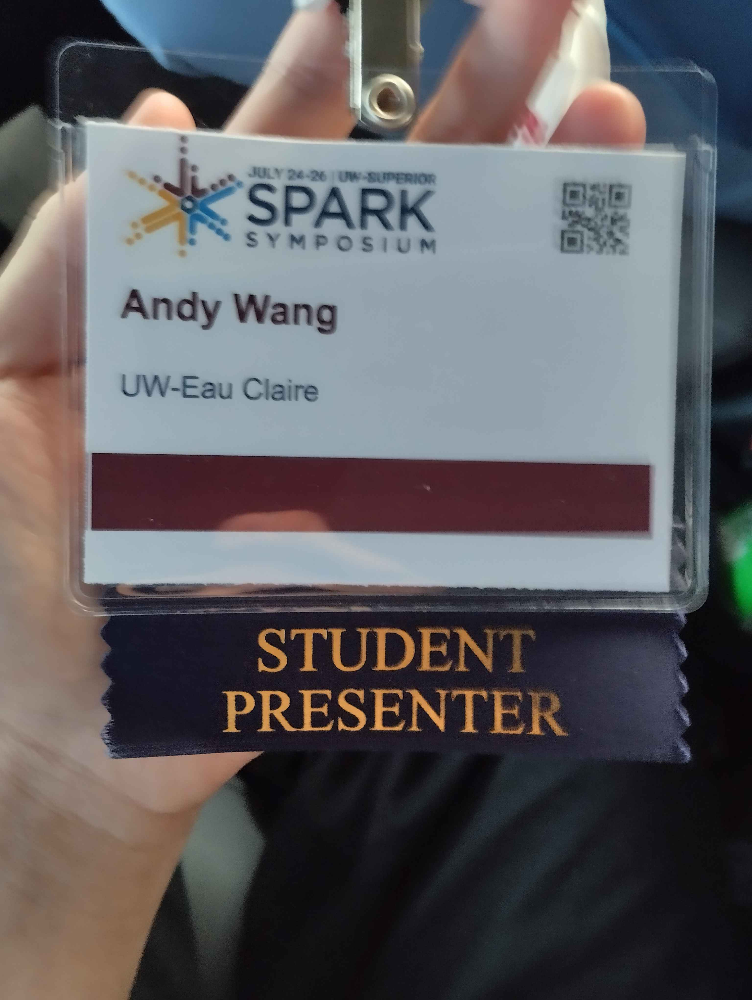 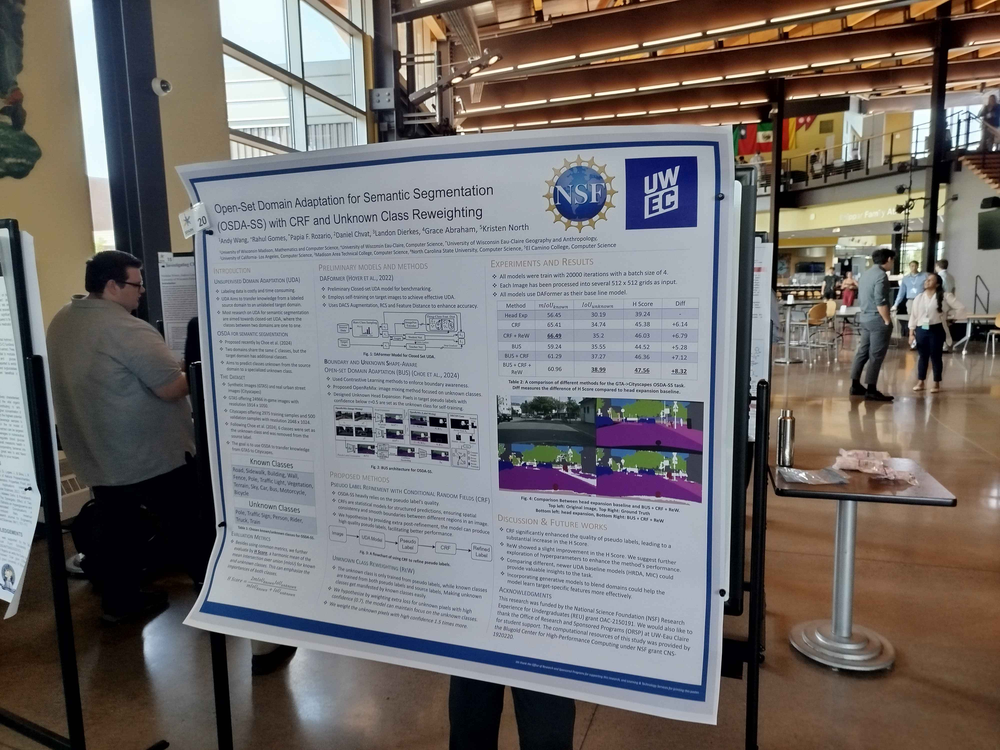Next, I want to talk about some activities I did with people during the program. First, we went to quite a few local dining places in Eau Claire, and they were all pretty good. The burgers were huge and delicious, although a bit too greasy for my liking at the end. The ice cream was also very good, as Wisconsin is known for its dairy products. We also went to watch the movie “Deadpool and Wolverine”, and the seats in the theater was adjustable, which was pretty cool. We also went kayaking, which was a lot of fun, although extremely exhausting (It was also raining cats and dogs at the end, which made it super chaotic but fun). We were also on a local news channel by accident, and it was pretty funny.
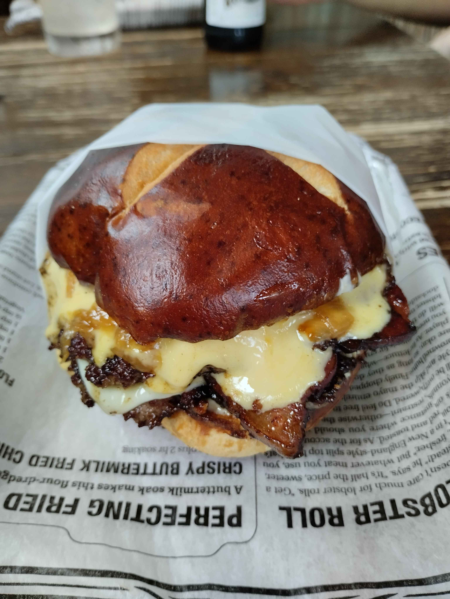 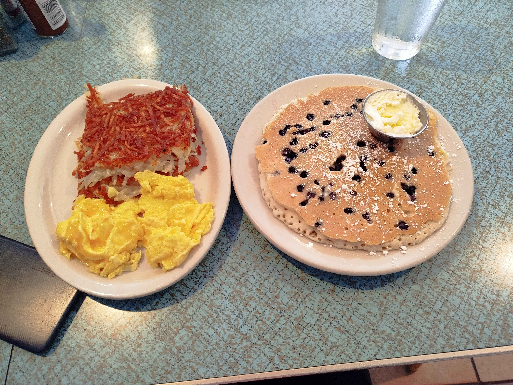The most memorable activity was our trip to Mayo Clinic in Rochester, MN. We had a short tour of the clinic, and was explained how AI is currently developed and used in the clinic. It was really cool to see how AI is used in a real-world setting, and I learned a lot of new things. I connected with several people there, and I am considering to apply for a summer AI research internship there next year.
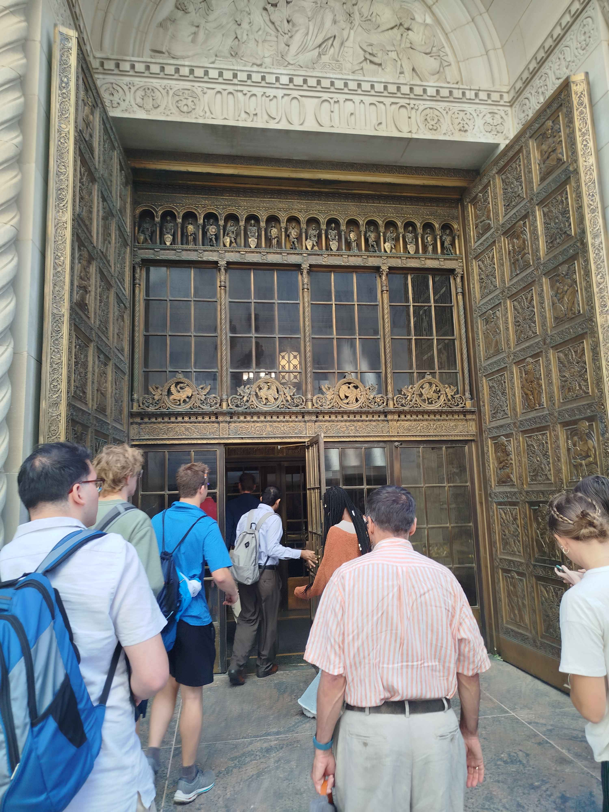 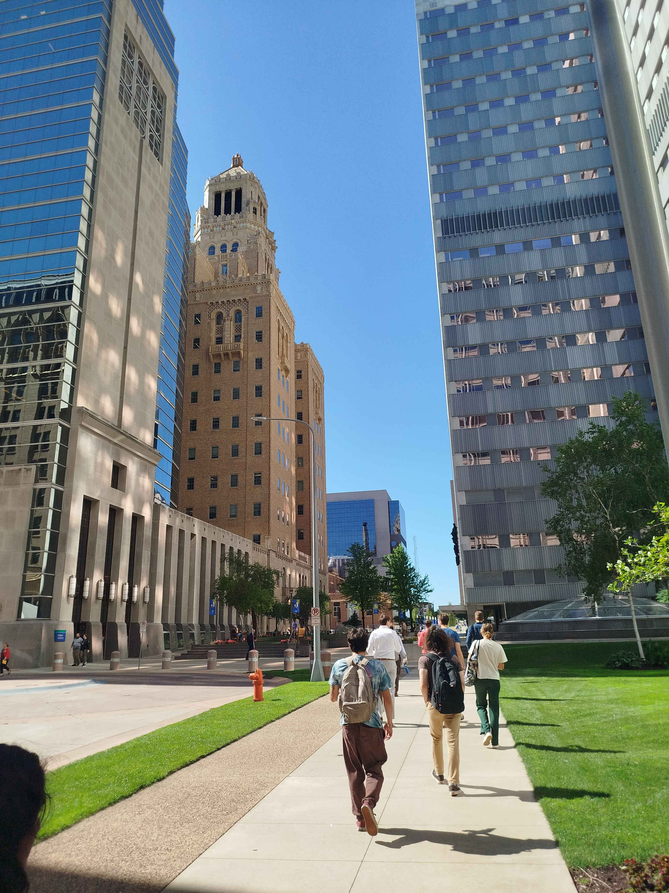Lastly, we also visited the HPC center, where I saw the GPUs that ran my code for the project.
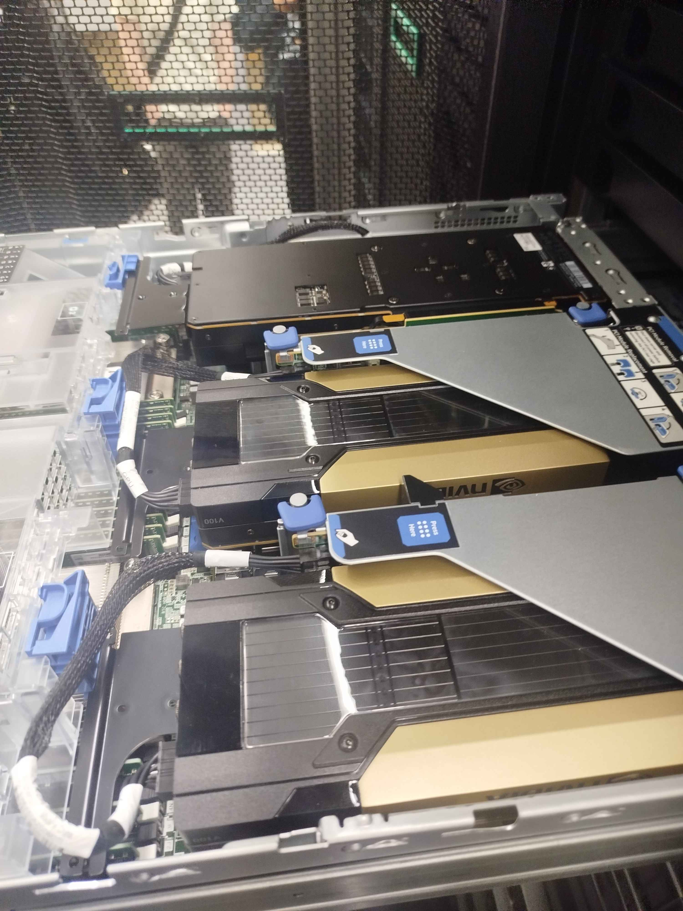In summary, this was a really cool experience, and I learned a lot of new things. I also met some cool people and established connections. It also made me understand the hardships of doing research, and I am more motivated to do well in the future.
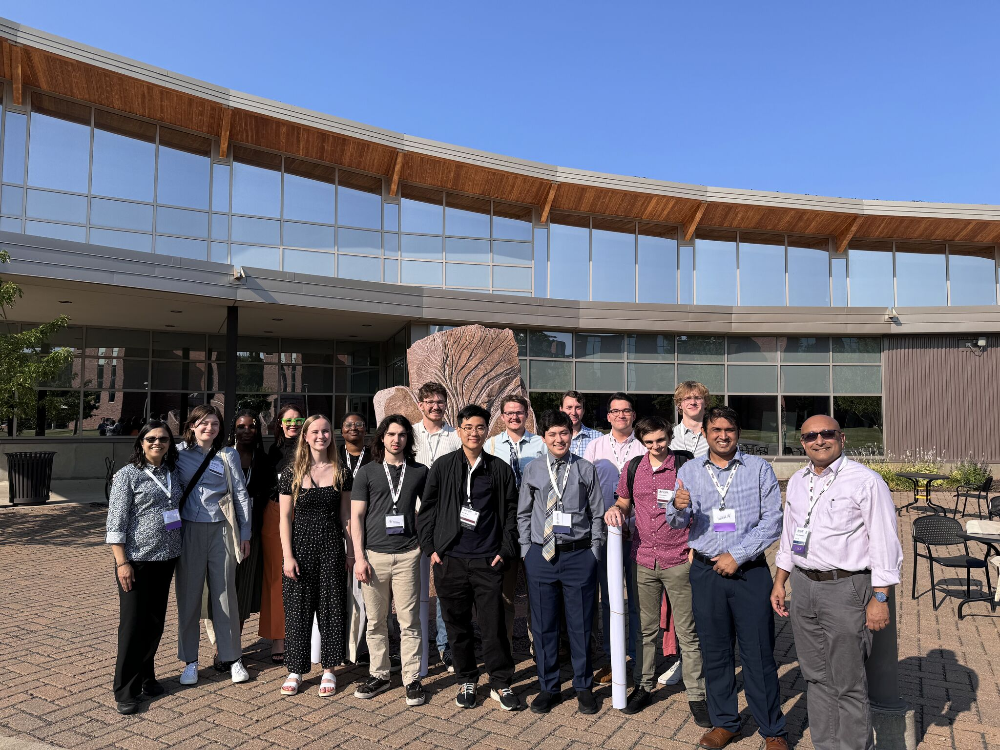